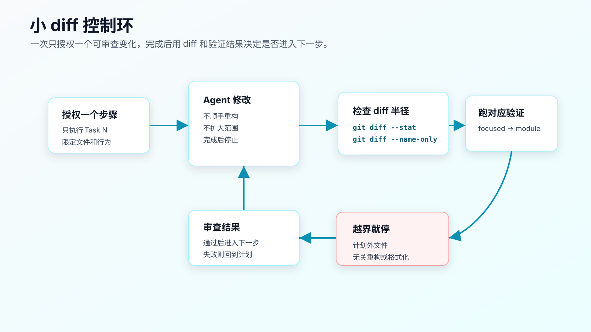
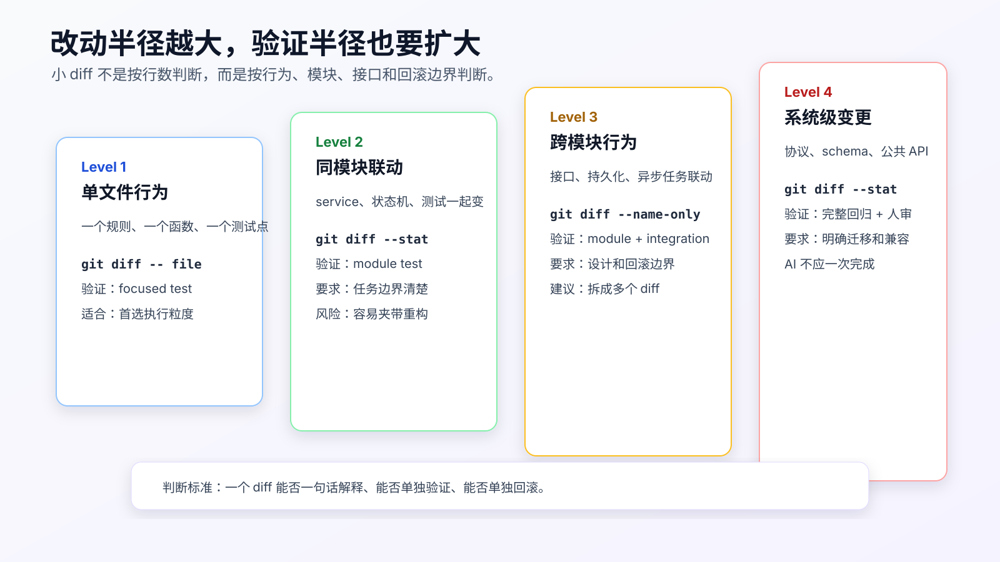

小步开发：为什么要限制 AI 一次改动范围
让 AI 写代码，最容易低估的一件事是 diff 管理。
很多人会把注意力放在“它有没有实现需求”。但在真实工程里，另一个问题同样重要：这个 diff 能不能被审。
一个 800 行 diff，里面同时有行为修改、测试补充、格式化、重命名、顺手重构和文档调整，就算测试通过，也很难判断它到底安全不安全。你不知道哪一行是需求必须，哪一行是模型自作主张。更麻烦的是，一旦出问题，你也不知道该回滚哪一部分。
所以 AI Coding 不能只讲“让模型完成任务”，还要讲“让模型一次只产生一个可审查变化”。
小步开发的核心不是少写代码，而是控制改动半径。
一次改动最好能满足三个条件：
一句话能解释
一个命令能验证
失败后能单独回滚
做不到这三点，就应该继续拆。

AI 为什么特别容易产生大 diff
人类程序员也会写大 diff，但 AI 写大 diff 的方式更隐蔽。
它有几个天然倾向。
它会补全任务。
你说“订单取消走退款流程”，它可能联想到状态机、退款服务、支付回调、前端展示、接口返回、日志、文档。它的联想不一定错，但一次 diff 不该吞下所有东西。
它会顺手整理。
模型看到命名不一致，会想统一；看到旧测试写得丑，会想重写；看到重复逻辑，会想抽函数。很多顺手改动单看有道理，但会污染当前需求。
它会为了让测试通过扩大范围。
测试失败时，它可能不先判断失败是否属于当前任务，而是继续改更多代码。没有范围限制时，修复路径会越走越远。
它不天然感知 review 成本。
对模型来说，改 3 个文件和改 15 个文件只是输出长度不同。对人来说，审查成本完全不同。
所以要主动限制 AI 的一次改动范围。
小 diff 不是按行数判断
很多人会用行数判断 diff 大小，这不够。
一个 20 行公共接口变更，风险可能比 200 行测试快照更新更高。
更实用的判断方式是看改动半径：

Level 1 是单文件行为变化。比如给状态转换函数增加一个 paid -> refund_requested 分支，并补一个 focused test。
Level 2 是同模块联动。比如状态机、取消服务和订单取消测试一起改。
Level 3 是跨模块行为变化。比如订单取消、退款服务、事务处理和异步任务一起改。
Level 4 是系统级变化。比如公共 API response、数据库 schema、协议、权限模型、结算规则。
AI 一次最适合做 Level 1 或边界清楚的 Level 2。
Level 3 要拆成多个小 diff。
Level 4 不应该让 AI 一次完成。它可以协助写设计、补测试、做迁移草稿，但需要更严格的人审和阶段验证。
开始前先限制文件范围
小步开发不是等 diff 出来后再后悔，而是在执行前就限制范围。
错误指令：
按计划实现订单取消退款流程。
直接限制任务范围：
只执行 Task 2：添加 paid -> refund_requested 状态转换。
允许修改：
- `src/order/order-status-transition.ts`
- `test/order/order-cancel.test.ts`
禁止修改：
- `src/order/order-cancel-service.ts`
- `src/refund/**`
- API response 类型
- 数据库 schema
- 支付回调逻辑
验证：
- `npm test -- order-cancel`
完成后停止，输出：
- 改动文件列表
- diff 摘要
- 验证命令和结果
这段指令有四个控制点：
- 只做一个 Task。
- 明确允许文件。
- 明确禁止范围。
- 完成后停止。
很多 AI 越界不是因为它不听话，而是你没有把边界写到可执行粒度。
每一步都用 Git 看半径
不要只读 AI 的总结。
每一步完成后，先看：
git diff --name-only
再看：
git diff --stat
如果文件数量超过计划，先不要继续。
例如计划只允许两个文件：
src/order/order-status-transition.ts
test/order/order-cancel.test.ts
实际出现：
src/order/order-status-transition.ts
src/order/order-cancel-service.ts
src/refund/refund-request-service.ts
test/order/order-cancel.test.ts
这已经越界。不要让 AI 解释几句就继续。先要求它说明：
你修改了计划外文件。
请先不要继续实现。
说明每个计划外文件为什么被修改。
如果不是当前 Task 必需，请恢复这些文件的改动，只保留 Task 2 范围内的 diff。
这里要注意：恢复计划外文件时，不要粗暴 git checkout -- .。当前工作区可能有你自己的改动，也可能有前一步已经确认过的改动。让 Agent 根据 diff 删除自己刚产生的计划外改动，或者你手动按文件审。
小步开发的关键是“发现越界就停”，不是“越界后继续补救”。
不要让重构混进需求 diff
AI 很喜欢顺手重构。
它可能会说：
我顺手整理了重复逻辑，提升可读性。
这句话在 review 里要提高警惕。
重构不是不能做，但不要和行为变更混在同一个 diff。
如果确实需要重构，拆成两个 diff：
Diff 1：纯重构
- 不改变行为。
- 只移动/抽取代码。
- 所有现有测试必须保持通过。
Diff 2：行为变更
- 基于重构后的结构修改需求。
- 新增或修改测试。
如果重构不是需求必需，直接拒绝：
当前 Task 不做重构。
请恢复命名整理、抽函数和格式化改动。
只保留 paid -> refund_requested 状态转换和对应测试。
一个好习惯是要求 AI 在计划里声明：
No opportunistic refactoring.
No unrelated formatting.
No dependency updates.
这能减少大量噪音。
验证半径要匹配改动半径
小 diff 不是只改小，也要验证得准。
如果是 Level 1 单文件行为改动，先跑 focused test：
npm test -- order-cancel
如果是 Level 2 同模块联动，再跑模块测试：
npm test -- order
如果是 Level 3 跨模块联动，需要补集成路径：
npm test -- order
npm test -- refund
npm test -- api-contract
如果是 Level 4 系统级变化，除了自动化测试，还要有人工审查、迁移检查、兼容性检查和回滚方案。
很多人把“小步开发”理解成只跑小测试，这是错的。
正确做法是：
先用最小测试约束当前 diff。
通过后再扩大验证半径。
验证半径随着改动半径扩大。
否则你会得到一个局部通过、全局出事的改动。
用 Task 边界控制上下文
小步开发还能降低上下文污染。
一次只执行一个 Task，Agent 当前需要关注的上下文就更少。
例如 Task 1 只加测试：
只需要 requirements、现有测试、状态枚举。
不需要实现服务内部细节。
Task 2 只改状态转换：
只需要状态机文件、相关测试、状态定义。
不需要前端、不需要支付回调、不需要数据库 migration。
Task 3 再接退款请求创建：
才需要 refund request service、事务边界、幂等策略。
如果一开始就把所有文件都给 AI，它会同时考虑所有问题，输出会混在一起。
所以小步开发不只是 review 策略，也是上下文策略。
执行前写清“当前步骤完成定义”
一个 Task 必须有完成定义。
坏写法：
完成状态转换。
好写法：
Task 完成定义：
- `paid -> refund_requested` 状态转换存在。
- pending cancellation 行为不变。
- shipped cancellation 行为不变。
- duplicate cancellation 测试仍然失败，因为幂等还没实现。
- `npm test -- order-cancel` 中只有预期失败。
注意这里的“预期失败”。
小步开发不要求每一步都让所有测试通过。TDD 或分步实现时，中间步骤出现预期失败是正常的。关键是失败要被解释清楚，不能变成未知失败。
如果 Agent 看到失败就擅自实现后续 Task，就破坏了小步边界。
执行指令里可以写：
如果出现预期失败，请报告，不要为了让它通过而执行下一步。
用 diff 摘要训练审查节奏
每一步完成后，让 AI 输出固定格式：
Changed files:
- `src/order/order-status-transition.ts`
- `test/order/order-cancel.test.ts`
What changed:
- Added paid -> refund_requested transition.
- Added focused test for paid cancellation.
- Kept pending and shipped tests unchanged.
Verification:
- `npm test -- order-cancel`
- Result: paid cancellation passes, duplicate cancellation still fails as expected.
Out of scope not touched:
- payment callback
- API response shape
- database schema
然后你用 Git 验证它的摘要：
git diff --name-only
git diff --stat
AI 摘要不是证据，Git diff 和命令输出才是证据。
但固定摘要有用。它能让 Agent 养成每一步都对齐范围和验证的输出习惯。
计划外文件怎么处理
发现计划外文件，不要马上让 AI 继续。
先分类：
必要越界：当前 Task 的设计漏了文件。
非必要越界：顺手重构、格式化、猜测性实现。
误伤越界：格式化工具、自动生成文件、锁文件变化。
必要越界要回到计划：
当前 Task 需要扩大到 `src/refund/refund-request-service.ts`。
请先更新计划，说明为什么 Task 2 无法在原范围完成。
不要直接继续实现。
非必要越界要移除。
误伤越界要看项目规则。有些格式化或锁文件变化是工具自动产生的，但仍然要解释和验证。
小步开发不是禁止所有计划外变化，而是所有计划外变化都要重新授权。
生成文件、锁文件和依赖要单独处理
真实项目里，小步 diff 经常会碰到生成文件和锁文件。
比如：
package-lock.json
pnpm-lock.yaml
openapi-generated-client.ts
prisma/schema generated files
protobuf generated files
这些文件不一定不能改，但不能被悄悄带进 diff。
可以在 task 里写：
Generated and lock files:
- do not update dependencies in this task.
- do not regenerate API clients unless explicitly authorized.
- if a generated file changes, stop and explain which command produced it.
- if lock file changes, explain whether a dependency was added or package manager rewrote metadata.
为什么要这么严？
因为 AI 可能为了让类型通过，顺手升级依赖；为了接口字段对上，顺手改生成 client；为了测试通过，顺手重跑生成命令。每一步都可能合理，但合在一个行为 diff 里，review 成本会暴涨。
依赖更新最好单独成 diff：
Diff A: dependency or generated artifact update
Diff B: behavior change based on updated artifact
这样出问题时才能判断是依赖升级导致，还是业务实现导致。
前端小步也要按行为切，不按组件切
前端任务容易按组件拆：
改按钮
改弹窗
改列表
改详情页
这不一定是好拆法。
如果需求是“已支付订单取消后显示退款处理中”，更合适的切法是按用户行为：
Step 1: 接口 mock 或测试数据里加入 refund_requested 状态
Step 2: 订单详情页能显示 refund_requested
Step 3: 取消成功后刷新为 refund_requested
Step 4: 重复点击被禁用或后端幂等结果被正确展示
每一步都能用页面测试、组件测试或截图验证。
如果按组件切，Agent 很容易同时改按钮、状态映射、API client、样式和错误处理，最后页面看起来能用，但你很难判断哪一块承担了业务行为。
前端小步同样要写 allowed files 和 forbidden changes。比如只做展示时，不应该改 API client；只做 API client 时，不应该顺手改页面样式。
小步执行可以用 checkpoint，但不要掩盖审查
有些 Agent 支持 checkpoint、审批、分支或 worktree。它们对小步开发很有帮助，但不能替代审查。
一个实际流程可以是：
Step 1 完成
-> 查看 git diff --name-only
-> 运行 focused test
-> 记录结果
-> 接受 checkpoint
-> 授权 Step 2
不要把 checkpoint 当成“可以放心让它一直跑”的理由。checkpoint 只是降低回退成本，不会告诉你 diff 是否合理。
如果工具没有 checkpoint，也可以用普通 Git 做同样的事：
git diff --name-only
git diff --stat
如果项目允许提交，可以在每个可审小步后提交；如果当前仓库还不适合提交，就至少保留清晰的验证记录。
小步和 PR 的关系
小步开发不等于每一步都发一个 PR。
真实项目里的关系是：
Task step 控制 Agent 一次改动半径
commit 记录相对完整的本地历史
PR 承载 reviewer 能一次理解的交付范围
一个需求可能有五个小步，但最后一个 PR：
Step 1: 加失败测试
Step 2: 改状态转换
Step 3: 接退款请求
Step 4: 补失败处理
Step 5: 扩大验证
PR: paid order cancellation enters refund flow
也可能拆成两个 PR：
PR 1: backend cancellation behavior
PR 2: frontend display for refund_requested
拆 PR 的判断标准不是“文章里说要小步”，而是 reviewer 能否在一次审查里理解和验证。
如果一个 PR 同时改后端状态、前端页面、移动端兼容、数据库迁移和运营后台，就算每一步执行时很小，最终审查仍然过重。
小步开发要服务交付。它控制 Agent 的执行半径，PR 控制人的审查半径。
什么时候应该停下来拆新任务
小步执行中出现这些信号，就不要继续当前任务：
- 需要新增依赖。
- 需要修改数据库 schema。
- 需要改 public API response shape。
- 需要跨 repo 改动。
- 发现当前需求和已有 spec 冲突。
- 需要把测试从 unit 升级到 E2E 才能证明行为。
- 改动文件数量超过计划两倍以上。
这些不是失败，而是任务边界变了。
正确处理是：
停止当前 step。
记录新发现。
更新 requirements/design/tasks。
重新授权新的小步。
不要让 Agent 带着“我快做完了”的状态继续扩张。AI 不会天然感知生产交付边界，边界变化必须由人重新确认。
每个小步都要能说明回滚方式
小步开发还有一个很现实的指标：这一步能不能单独回滚。
如果一个 Step 改完后，必须连着后面三个 Step 才能让项目恢复可用，这一步可能切得不对。
可以在任务里写：
Rollback:
- Step 1 tests can be reverted independently.
- Step 2 status transition depends on Step 1 tests.
- Step 3 refund request wiring should not be merged without Step 2.
- No migration or dependency update in this step.
回滚方式不一定是执行 git revert。它也可以是：
- 删除当前 Step 的新增测试。
- 恢复一个状态分支。
- 关闭一个 feature flag。
- 回退一个配置项。
- 不合并当前 PR。
关键是你要知道出问题时退哪一块，而不是回滚整天工作。
涉及数据库迁移、外部事件、队列消息、缓存 key 的任务，更要提前写回滚。AI 可以帮你生成候选方案，但是否能接受，要由程序员判断。
如果回滚说不清，就不要把它当成小步。
合并前再看一次整体 diff
小步执行过程中每一步都可控，不代表最终合并一定可控。
合并前要把所有小步放在一起看：
git diff --stat main...HEAD
git diff --name-only main...HEAD
重点看三类问题。
第一，是否有和需求无关的文件。比如锁文件、生成 client、样式文件、文档文件突然出现。
第二，是否有同一个行为被多个小步重复修改。重复修改可能说明前面的拆分不合理，也可能说明 Agent 在后续步骤推翻了前面的假设。
第三，是否有测试覆盖和改动半径不匹配。跨模块改动只跑了一个 focused test，就不能说验证充分。
小步开发的最后一步，是把局部证据合成整体交付证据。否则每一步都小，最终仍然可能是一个难审的大包。
不要让 AI 一次“修所有测试”
测试失败后，很多人会说：
把失败的测试都修了。
这类指令风险很高。
先分类失败：
先不要改代码。
请读取测试输出并分类：
- 当前 Task 引入的失败。
- 预期失败。
- baseline 已存在失败。
- 与当前 Task 无关的失败。
只给出分类和下一步建议，不要修。
分类完成后，再授权具体修复。
如果失败属于当前 Task，就在当前 diff 里修。
如果失败是后续 Task 的预期失败，不修。
如果失败是 baseline，就停止并记录。
如果失败无关，不要混进当前 diff。
这能避免 AI 把测试套件里的旧债一起拖进来。
一个完整的小步执行模板
可以把下面这段作为执行指令：
Execute only Task <N>.
Scope:
- Allowed files:
- <file 1>
- <file 2>
- Forbidden changes:
- no unrelated refactor
- no formatting-only changes outside allowed files
- no dependency update
- no public API shape change unless explicitly requested
Expected result:
- <behavior change>
- <expected test state>
Verification:
- <command>
Stop if:
- you need to modify files outside the allowed list.
- baseline tests fail.
- the implementation requires a broader design change.
- the requested behavior conflicts with existing tests or specs.
After finishing:
- stop.
- report changed files.
- report verification command and result.
- do not start the next task.
这不是为了限制 AI 变笨，而是为了让每一步都可审查。
可以用配套工具辅助，但不要依赖工具替你判断
配套工程的工具 module ai-coding-workflow-kit 里有一个 verify-ledger，可以检查验证记录是否包含必要段落和命令证据：
node src/cli.js verify-ledger --file examples/verification-ledger.pass.md
它不会判断业务正确性，也不会替你审 diff。它只能提醒你：有没有留下命令、结果和风险记录。
小步开发最核心的证据仍然是：
git diff --name-only
git diff --stat
git diff
再加上对应测试命令。
工具可以帮你不漏记录，但不能替你判断“这个 diff 是否应该存在”。
常见错误
错误一：把小步理解成少写几行。
小步看的是行为边界、文件范围、验证半径和回滚能力，不是行数。
错误二：一个 Task 混测试、实现、重构、文档。
这些可以都要做，但不应该都在一个 diff 里。
错误三：计划外文件出现后继续推进。
计划外文件必须先解释、分类、重新授权。
错误四：让 AI 修所有测试。
测试失败先分类，再决定是否修。不要让旧失败混进当前 diff。
错误五：只看 AI 总结，不看 Git diff。
AI 总结可能漏掉计划外改动。git diff --name-only 和 git diff --stat 是必查动作。
错误六：每一步都跑全量测试。
小步阶段先跑 focused test，关键节点再扩大验证。每步都跑全量可能太慢，反而降低反馈频率。
改完后重点看什么
一次小步执行结束后，看这几个结果：
- 改动文件是否在允许列表里。
- 是否有无关格式化、重命名、抽函数。
- diff 能否一句话解释。
- 验证命令是否覆盖当前行为。
- 测试失败是否已经分类。
- 这一步能否单独回滚。
如果答案不清楚，先不要进入下一步。
AI Coding 的速度优势来自高频反馈，不是一次性吞下更多工作。更可控的节奏，是让 AI 快速完成一个小 diff，然后由人用证据决定是否继续。
常见问题
小步会不会变慢？
单步看会慢一点，整体通常更快。大 diff 出问题后的排查和回滚成本更高。
一次只改一个文件是不是太死？
不是按文件数绝对限制。关键是一个 diff 能否单独解释、验证和回滚。同模块两个文件可以是合理小步，跨模块五个文件通常要拆。
AI 说必须重构才能实现，怎么办？
让它先解释为什么不重构无法实现。如果确实必要，先做纯重构 diff，验证行为不变，再做行为变更 diff。
计划外文件已经改了，能不能直接保留？
先分类。必要越界要更新计划并重新授权；非必要越界要移除；误伤越界要解释来源和影响。
小步开发和 TDD 什么关系？
TDD 是很适合小步开发的一种方式。先用失败测试定义行为，再用最小实现让测试通过。后面会单独讲 TDD + AI Coding。
可复查资料
- Git diff 官方文档：https://git-scm.com/docs/git-diff
- Git status 官方文档：https://git-scm.com/docs/git-status
- GitHub Copilot coding agent best practices：https://docs.github.com/en/copilot/tutorials/cloud-agent/get-the-best-results
- VS Code Source Control：https://code.visualstudio.com/docs/sourcecontrol/overview